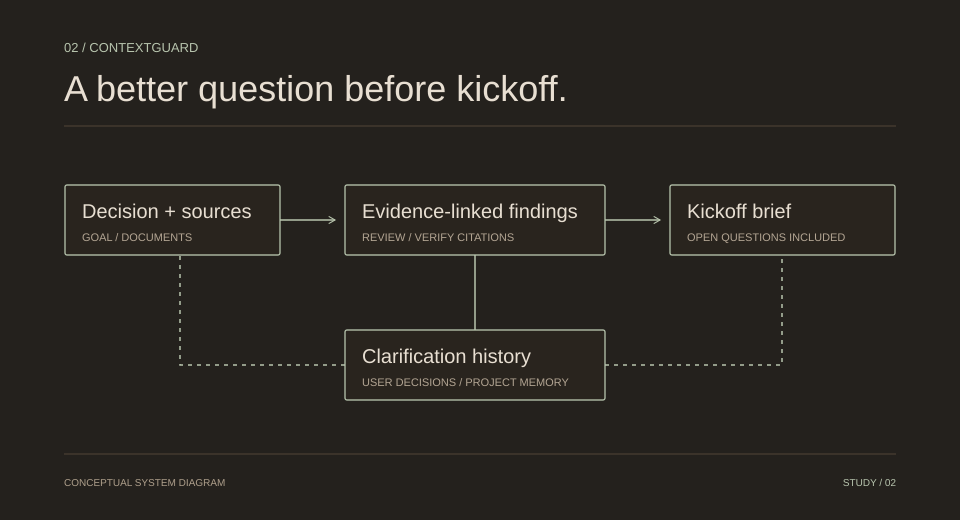

evidence review & decision history
ContextGuard
An evidence-linked review workspace for finding gaps, recording clarifications, and preparing a project-kickoff brief.

Context
The problem worth solving.
A project can start with unresolved assumptions, conflicting documents, and missing approvals. A useful review needs to make those gaps inspectable, then record what a person actually decided.
Architecture
How the pieces connect.
The workspace accepts a decision and source documents. Typed review stages produce findings; deterministic verification checks citation existence and report structure. Clarifications retain source locations and history. Confirmed decisions can be recalled within the same project.
- 01Decision + sources
- 02Evidence-linked review
- 03Clarification history
- 04Kickoff brief
Contribution
What I built.
- Built a source-linked review flow from intake to findings, clarification, and export.
- Connected saved decisions, owners, source passages, and input fingerprints to local review history.
- Kept project memory scoped and distinguished confirmed user context from document facts.
Engineering choices
The decisions behind it.
Citations you can inspect
The verifier checks that a quoted passage exists. That is deliberately narrower than claiming the model’s interpretation is correct.
Memory with boundaries
Local SQLite recall works independently. A configured Mem0 adapter can add semantic retrieval, but its presence is not presented as a verified live deployment.
A brief with open questions
Exports separate clarifications, unresolved decisions, and accepted risks. A saved answer is a user statement, not an automatic readiness certification.
Boundaries
What this does—and what needs care.
This is a local, single-user application. Sample replay is a fixed fictional fixture, not a live detection benchmark. Provider output can miss issues or flag false positives; exact quotation checks cannot prove semantic accuracy.
This case study is grounded in the public repository’s README, checked 1 November 2026. It describes the implementation; it is not an independent audit of the running project.
Read the technical source